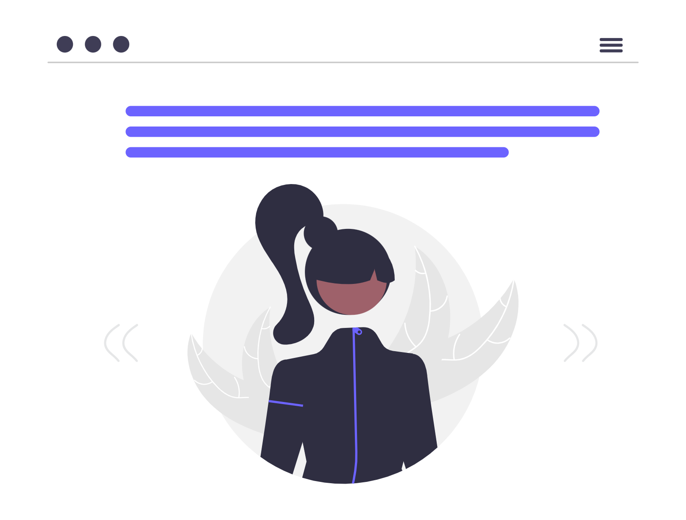

Hello I am Mohammed Shahin ALi, a passionate full stack Developer interested in creating user friendly and responsive web application
Full-stack Developer with hand on experience building responsive web application using java,Springboot, Angular, MySql, Skilled in RESTful API Design, JWT based authuentication, layered architecture with DTO and containerzing application with Github vertion control

Technologies used : HTML, CSS, javascript, and Angular
Technologies used : HTML, CSS, javascript, and Angular,Java, springboot, MySql